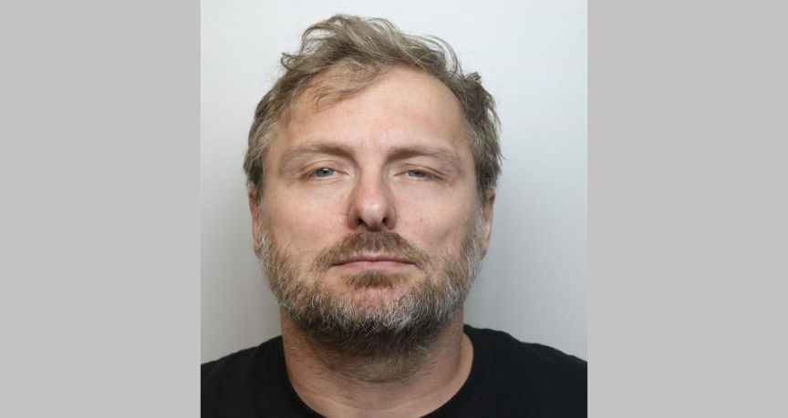

UK Man Moderated a Child Abuse Site

Brett Saunders
Brett Saunders 50, of Swindon, believed being a "Global Moderator" at the dark web child sex abuse site was an honor. Sanders was in charge of deciding who was allowed to join the over 2000-member site.
Investigations by the NCA focused on a moderator under the username "Wetty." Wetty was in charge of running the site's guest portal. He issued or deducted reputation points to determine who was allowed to join the site. He also ensured the site’s rules were adhered to and responded to user questions.
Wetty also actively participated in discussions on the site by providing other site members with advice on how to evade detection by law enforcement.
Investigations into Wetty resulted in the identification of Saunders. The investigators executed search and arrest warrants at his residence in August 2022.
The search resulted in the seizure of several electronic devices including a laptop hidden under a sofa cushion, and a phone and hard drive hidden in an air vent.
Saunders was logged in to his account on the child abuse site on the laptop. A review of the account led to the discovery of over 3,000 posts made by Saunders. The investigators established that Saunders had uploaded 115 child abuse images and videos to the site. An additional 65,000 files of child abuse material were recovered from his devices.
When questioned, Saunders admitted he was a Global Moderator on the site and had uploaded child abuse images to the site.
Private messages recovered from his account revealed that when another member congratulated him on his promotion to Global Moderator he said, "Thank you… I must say it came as a bit of a shock to me! Not sure what I did to deserve the honor, but whatever it was I will try to keep doing it to the best of my abilities!"
Quote:NCA's, Adam Priestley
Brett Saunders was directly responsible for facilitating the sexual abuse of children. He became part of a global community of paedophiles to further his own sexual interest in children and his dedication to this platform was such that he was appointed as a moderator.
It was clear he took this role extremely seriously, investing a significant amount of time to keeping the site up and running, on top of a full-time job.
The site hosted horrific videos, images and discussions on child abuse, some of which Saunders posted himself or actively encouraged others to do so.
He did this brazenly, clearly assuming he was protected by the dark web. The NCA is focused on targeting dark websites such as these, which play a huge role in the normalization of offending. We have the capabilities to identify the highest harm offenders who try to hide in these spaces, and are committed to bringing them to justice.
After his arrest, Wiltshire Police charged Saunders with breaching the sexual harm prevention order placed on him when he was released from prison for his previous child abuse offenses.
He was found guilty of the breach and sentenced to two years and eight months in prison.
In late 2023, he was charged with a further nine counts, including facilitating the sexual exploitation of a child under 13, participating in the criminal activities of an organized crime group, distributing and making indecent images of children in categories A-C, and possessing a prohibited image of a child.
Saunders pleaded guilty to all the charges on January 19, 2024, at Swindon Magistrates Court. He will be sentenced on March 5.